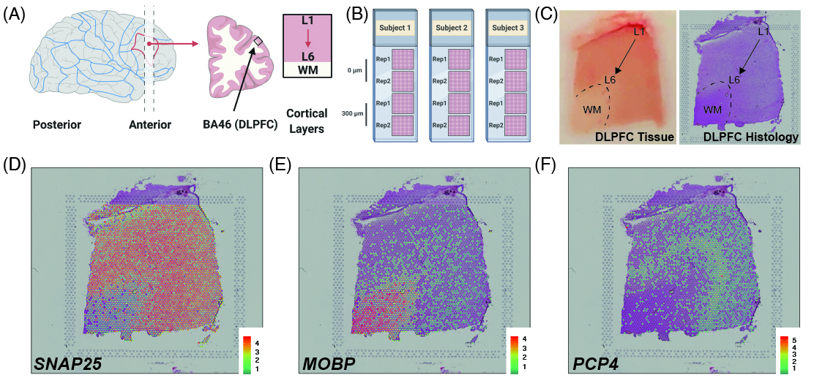
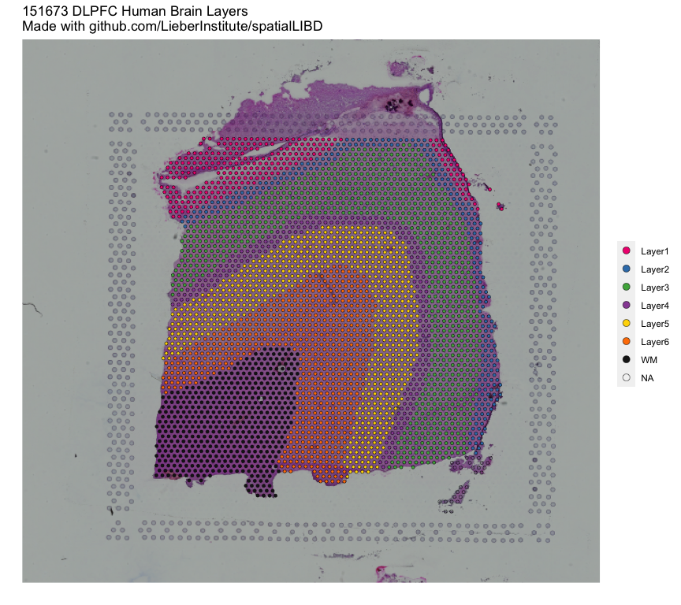

Welcome to the spatialLIBD project! It is composed of:
- a shiny web application that we are hosting at spatial.libd.org/spatialLIBD/ that can handle a limited set of concurrent users,
- a Bioconductor package at bioconductor.org/packages/spatialLIBD (or from here) that lets you analyze the data and run a local version of our web application (with our data or yours),
- and a research article with the scientific knowledge we drew from this dataset. The analysis code for our project is available here.
The web application allows you to browse the LIBD human dorsolateral pre-frontal cortex (DLPFC) spatial transcriptomics data generated with the 10x Genomics Visium platform. Through the R/Bioconductor package you can also download the data as well as visualize your own datasets using this web application. Please check the bioRxiv pre-print for more details about this project.
If you tweet about this website, the data or the R package please use the #spatialLIBD hashtag. You can find previous tweets that way as shown here. Thank you! Tweet #spatialLIBD
Study design
As a quick overview, the data presented here is from portion of the DLPFC that spans six neuronal layers plus white matter (A) for a total of three subjects with two pairs of spatially adjacent replicates (B). Each dissection of DLPFC was designed to span all six layers plus white matter (C). Using this web application you can explore the expression of known genes such as SNAP25 (D, a neuronal gene), MOBP (E, an oligodendrocyte gene), and known layer markers from mouse studies such as PCP4 (F, a known layer 5 marker gene).

This web application was built such that we could annotate the spots to layers as you can see under the spot-level data tab. Once we annotated each spot to a layer, we compressed the information by a pseudo-bulking approach into layer-level data. We then analyzed the expression through a set of models whose results you can also explore through this web application. Finally, you can upload your own gene sets of interest as well as layer enrichment statistics and compare them with our LIBD Human DLPFC Visium dataset.
If you are interested in running this web application locally, you can do so thanks to the spatialLIBD R/Bioconductor package that powers this web application as shown below.
## Run this web application locally spatialLIBD::run_app() ## You will have more control about the length of the ## session and memory usage. ## You could also use this function to visualize your ## own data given some requirements described ## in detail in the package vignette documentation ## at http://research.libd.org/spatialLIBD/.
R/Bioconductor package
The spatialLIBD package contains functions for:
- Accessing the spatial transcriptomics data from the LIBD Human Pilot project (code on GitHub) generated with the Visium platform from 10x Genomics. The data is retrieved from Bioconductor’s
ExperimentHub. - Visualizing the spot-level spatial gene expression data and clusters.
- Inspecting the data interactively either on your computer or through spatial.libd.org/spatialLIBD/.
For more details, please check the documentation website or the Bioconductor package landing page here.
Installation instructions
Get the latest stable R release from CRAN. Then install spatialLIBD using from Bioconductor the following code:
if (!requireNamespace("BiocManager", quietly = TRUE)) install.packages("BiocManager") BiocManager::install("spatialLIBD")
Access the data
Through the spatialLIBD package you can access the processed data in it’s final R format. However, we also provide a table of links so you can download the raw data we received from 10x Genomics.
Processed data
Using spatialLIBD you can access the Human DLPFC spatial transcriptomics data from the 10x Genomics Visium platform. For example, this is the code you can use to access the layer-level data. For more details, check the help file for fetch_data().
## Load the package library('spatialLIBD') ## Download the spot-level data sce <- fetch_data(type = 'sce') #> Loading objects: #> sce ## This is a SingleCellExperiment object sce #> class: SingleCellExperiment #> dim: 33538 47681 #> metadata(1): image #> assays(2): counts logcounts #> rownames(33538): ENSG00000243485 ENSG00000237613 ... ENSG00000277475 #> ENSG00000268674 #> rowData names(9): source type ... gene_search is_top_hvg #> colnames(47681): AAACAACGAATAGTTC-1 AAACAAGTATCTCCCA-1 ... #> TTGTTTCCATACAACT-1 TTGTTTGTGTAAATTC-1 #> colData names(73): barcode sample_name ... pseudobulk_UMAP_spatial #> markers_UMAP_spatial #> reducedDimNames(6): PCA TSNE_perplexity50 ... TSNE_perplexity80 #> UMAP_neighbors15 #> altExpNames(0): ## Note the memory size pryr::object_size(sce) #> 2.08 GB ## Remake the logo image with histology information sce_image_clus( sce = sce, clustervar = 'layer_guess_reordered', sampleid = '151673', colors = libd_layer_colors, ... = ' DLPFC Human Brain Layers\nMade with github.com/LieberInstitute/spatialLIBD' )

Raw data
Below you can find the links to the raw data we received from 10x Genomics.
| SampleID | h5_filtered | h5_raw | image_full | image_hi | image_lo | loupe |
|---|---|---|---|---|---|---|
| 151507 | AWS | AWS | AWS | AWS | AWS | AWS |
| 151508 | AWS | AWS | AWS | AWS | AWS | AWS |
| 151509 | AWS | AWS | AWS | AWS | AWS | AWS |
| 151510 | AWS | AWS | AWS | AWS | AWS | AWS |
| 151669 | AWS | AWS | AWS | AWS | AWS | AWS |
| 151670 | AWS | AWS | AWS | AWS | AWS | AWS |
| 151671 | AWS | AWS | AWS | AWS | AWS | AWS |
| 151672 | AWS | AWS | AWS | AWS | AWS | AWS |
| 151673 | AWS | AWS | AWS | AWS | AWS | AWS |
| 151674 | AWS | AWS | AWS | AWS | AWS | AWS |
| 151675 | AWS | AWS | AWS | AWS | AWS | AWS |
| 151676 | AWS | AWS | AWS | AWS | AWS | AWS |
Citation
Below is the citation output from using citation('spatialLIBD') in R. Please run this yourself to check for any updates on how to cite spatialLIBD.
print(citation('spatialLIBD'), bibtex = TRUE) #> #> Collado-Torres L, Maynard KR, Jaffe AE (2020). _LIBD Visium spatial #> transcriptomics human pilot data inspector_. doi: #> 10.18129/B9.bioc.spatialLIBD (URL: #> https://doi.org/10.18129/B9.bioc.spatialLIBD), #> https://github.com/LieberInstitute/spatialLIBD - R package version #> 0.99.14, <URL: http://www.bioconductor.org/packages/spatialLIBD>. #> #> A BibTeX entry for LaTeX users is #> #> @Manual{, #> title = {LIBD Visium spatial transcriptomics human pilot data inspector}, #> author = {Leonardo Collado-Torres and Kristen R. Maynard and Andrew E. Jaffe}, #> year = {2020}, #> url = {http://www.bioconductor.org/packages/spatialLIBD}, #> note = {https://github.com/LieberInstitute/spatialLIBD - R package version 0.99.14}, #> doi = {10.18129/B9.bioc.spatialLIBD}, #> } #> #> Maynard KR, Collado-Torres L, Weber LM, Uytingco C, Barry BK, Williams #> SR, II JLC, Tran MN, Besich Z, Tippani M, Chew J, Yin Y, Kleinman JE, #> Hyde TM, Rao N, Hicks SC, Martinowich K, Jaffe AE (2020). #> "Transcriptome-scale spatial gene expression in the human dorsolateral #> prefrontal cortex." _bioRxiv_. doi: 10.1101/2020.02.28.969931 (URL: #> https://doi.org/10.1101/2020.02.28.969931), <URL: #> https://www.biorxiv.org/content/10.1101/2020.02.28.969931v1>. #> #> A BibTeX entry for LaTeX users is #> #> @Article{, #> title = {Transcriptome-scale spatial gene expression in the human dorsolateral prefrontal cortex}, #> author = {Kristen R. Maynard and Leonardo Collado-Torres and Lukas M. Weber and Cedric Uytingco and Brianna K. Barry and Stephen R. Williams and Joseph L. Catallini II and Matthew N. Tran and Zachary Besich and Madhavi Tippani and Jennifer Chew and Yifeng Yin and Joel E. Kleinman and Thomas M. Hyde and Nikhil Rao and Stephanie C. Hicks and Keri Martinowich and Andrew E. Jaffe}, #> year = {2020}, #> journal = {bioRxiv}, #> doi = {10.1101/2020.02.28.969931}, #> url = {https://www.biorxiv.org/content/10.1101/2020.02.28.969931v1}, #> }
Please note that the spatialLIBD was only made possible thanks to many other R and bioinformatics software authors, which are cited either in the vignettes and/or the paper(s) describing this package.
Code of Conduct
Please note that the spatialLIBD project is released with a Contributor Code of Conduct. By contributing to this project, you agree to abide by its terms.
Development tools
- Continuous code testing is possible thanks to GitHub actions through usethis, remotes, sysreqs and rcmdcheck customized to use Bioconductor’s docker containers and BiocCheck.
- Code coverage assessment is possible thanks to codecov and covr.
- The documentation website is automatically updated thanks to pkgdown.
- The code is styled automatically thanks to styler.
- The documentation is formatted thanks to devtools and roxygen2.
For more details, check the dev directory.


{kind=link}
{kind=link}
{kind=link}
{kind=link}
{kind=link}
{kind=link}
{kind=link}
{kind=link}
{kind=link}
{kind=link}
{kind=link}
{kind=link}
{kind=link}
{kind=link}
{kind=link}
{kind=link}
{kind=link}
{kind=link}
{kind=link}
{kind=link}
{kind=link}
{kind=link}
{kind=link}
{kind=link}